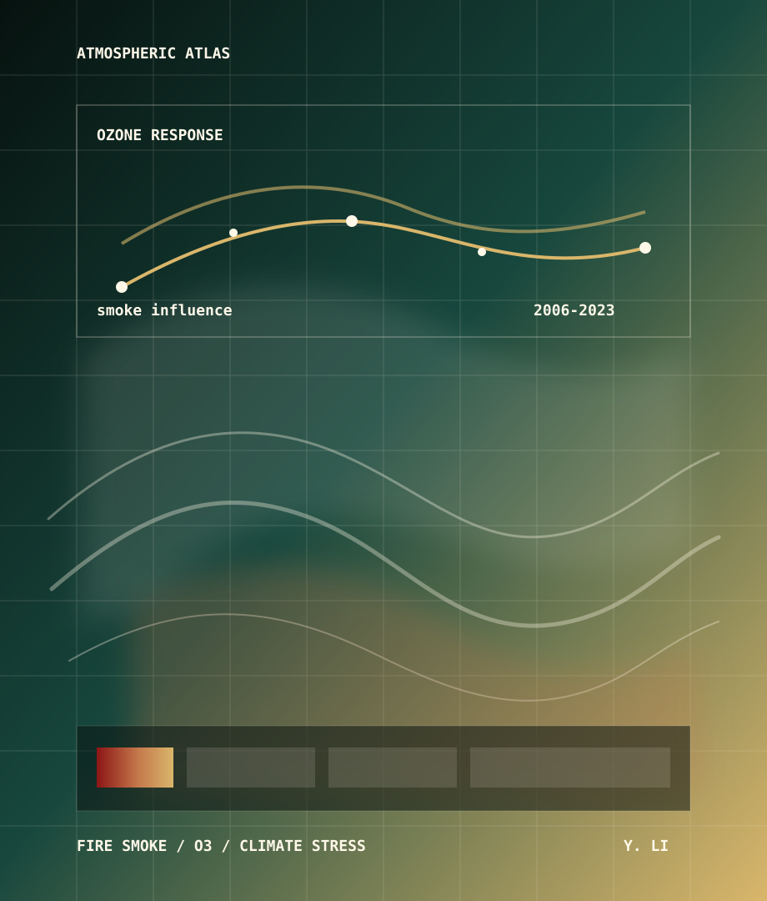

Wildfire smoke as an ozone driver
Estimating smoke-driven ozone changes and associated mortality burden across the United States.
Incoming Ph.D. student in Earth System Science at Stanford, working on wildfire smoke, ozone exposure, climate stress, and high-resolution environmental data.
I am interested in the moments when climate signals become measurable in the air people breathe and the ecosystems they depend on.

My recent work connects atmospheric chemistry, ecosystem response, and emissions inventories. The common thread is attribution: what changed, where did it happen, and who or what was exposed?
Estimating smoke-driven ozone changes and associated mortality burden across the United States.
Studying how heat, drought, and Rossby-wave-driven hot-dry conditions suppress ecosystem productivity.
Building high spatiotemporal resolution inventories to capture rebound dynamics in urban vehicle greenhouse gas emissions.
A national-scale analysis of how wildfire smoke increasingly reshapes ozone pollution and health burden.
doi:10.1126/sciadv.aec2903* equal contribution
Qiu, M.*, Li, Y.*, Childs, M., Kelp, M., Jin, X., Huang, G., Danesh Yazdi, M., Wei, Y., Wang, Y. & Chen, K. EarthArXiv preprint.
doi:10.31223/X5VJ5KLi, Y., Jin, X., Kelp, M., Sun, H. Z. & Qiu, M. Science Advances 12, eaec2903.
doi:10.1126/sciadv.aec2903Li, Y., Lian, X., Cui, J., Hong, S. & Wang, X. Journal of Geophysical Research: Biogeosciences 130, e2024JG008695.
doi:10.1029/2024JG008695Lian, X.*, Li, Y.*, Liu, J., Kornhuber, K. & Gentine, P. Nature Geoscience 18, 615-623.
doi:10.1038/s41561-025-01722-3Li, Y.*, Zhang, Q.*, Liu, M., Yang, M., Cai, X., Ye, J., Guo, W., Qin, H., Zhong, Q., Wang, B., Shen, G., Liu, J., Tao, S. & Wang, X. Environmental Science & Technology Letters 12, 405-412.
doi:10.1021/acs.estlett.5c00065Liu, M., Raymond, P. A., Lauerwald, R., Zhang, Q., Trapp-Muller, G., Davis, K. L., Moosdorf, N., Xiao, C., Middelburg, J. J., Bouwman, A. F., Beusen, A. H. W., Peng, C., Lacroix, F., Tian, H., Wang, J., Li, M., Zhu, Q., Cohen, S., van Hoek, W. J., Li, Ya, Li, Y., Yao, Y. & Regnier, P. Nature Geoscience 17, 896-904.
doi:10.1038/s41561-024-01524-zGuo, W., Liu, M., Zhang, Q., Deng, Y., Chu, Z., Qin, H., Li, Y., Liu, Y.-R., Zhang, H., Zhang, W., Tao, S. & Wang, X. Environmental Science & Technology 58, 15078-15089.
doi:10.1021/acs.est.4c01923